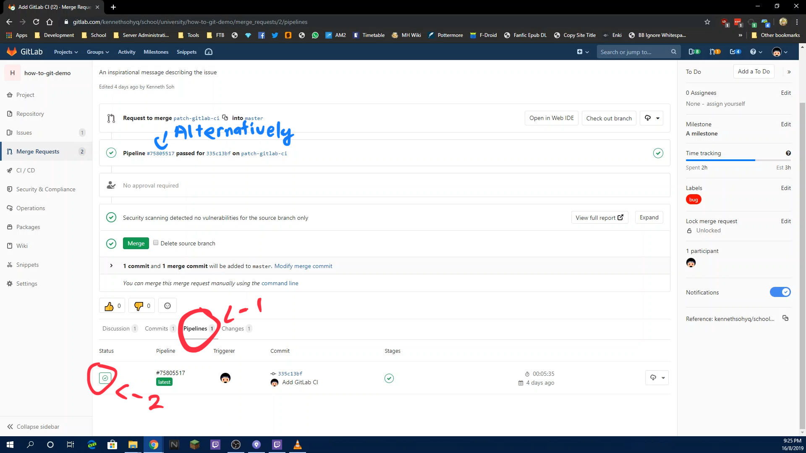
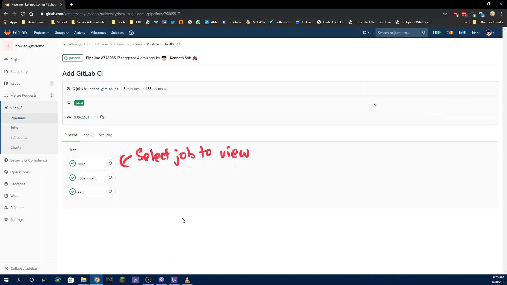
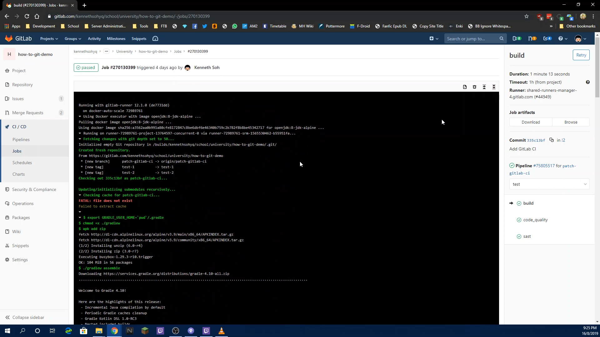

Ever wonder what all those checks the CI is doing when you are doing a MR (or any commits actually)?
Or wonder why your build is failing for some reason? This guide will show you how to access the CI to view the logs
Go too your MR (or commit) and click the Pipelines Tab
Click on the icon in the "Status" column Alternatively you can click on the Pipeline # hyperlink to go straight into the pipeline

Click on the build/test you wish to check the logs on

You can now view the logs as shown in the picture below

Demo Video The following is a video on how this is being done. Read the how-to guide before watching the video for actual steps to do it